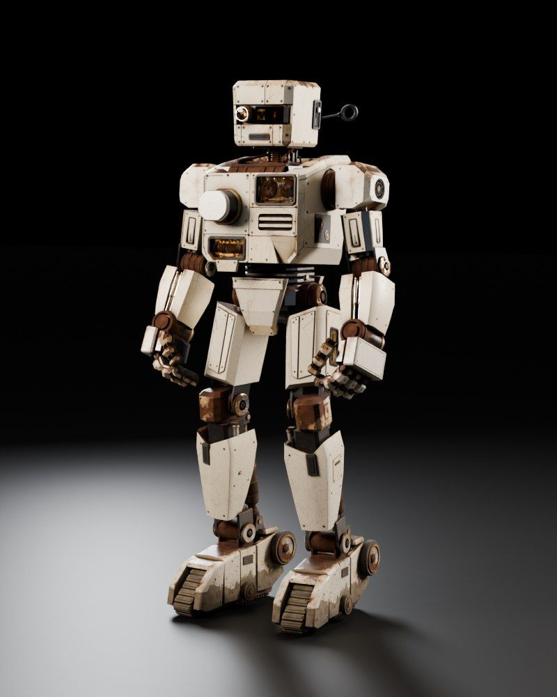

Session 2 · Week 1 · Thursday
Who Owns the Wrench?
Ownership, moves, borrowing and slices: the idea that makes Rust, Rust. By the end, the borrow checker stops feeling like a bouncer and starts feeling like a very thorough friend.
Robbie's rust15% · rained on

Session materials
Presentation · 60 minSlides21 slides with runnable code, some broken on purpose. Arrow keys to move, N for the teacher's speaker notes.
Cheat sheetOne page, all of Session 2Moves, borrows, slices and the five errors you'll meet this week. Keep it open during the lab.
Student HandbookWho Owns the Wrench? HandbookOwnership explained slowly, with memory tricks, an error field guide, a cheat sheet and 10 practice questions.
Quiz 2 · 15 minWho Owns the Wrench? Quiz12 questions, pass mark 70%. Your best score is saved in this browser.
Build it
Lab 2 · in class · 35 minFix the Borrow CheckerSeven tiny broken programs, seven ownership rules. No
.clone() allowed.
Homework 2 · due Session 3Log ScannerSix functions that borrow Robbie's log instead of taking it. 8 visible tests plus hidden edge cases, scored out of 10.